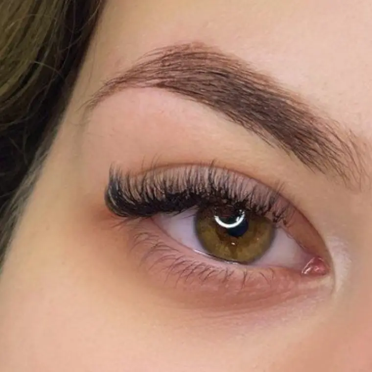
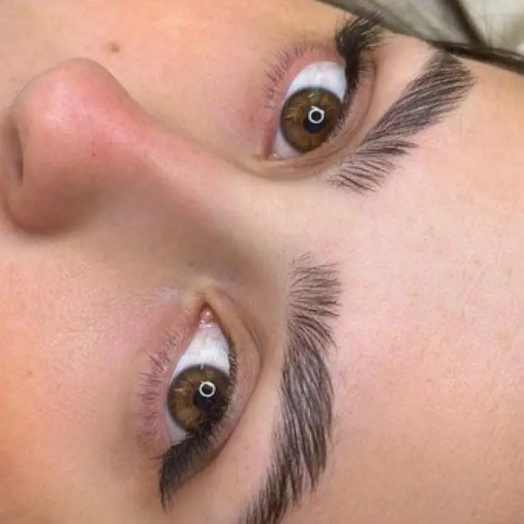
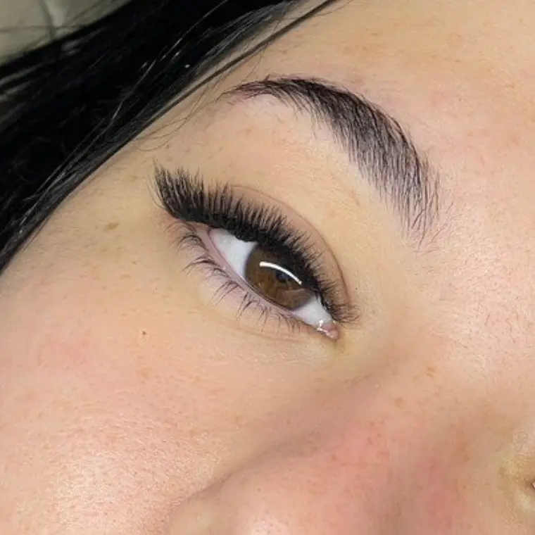
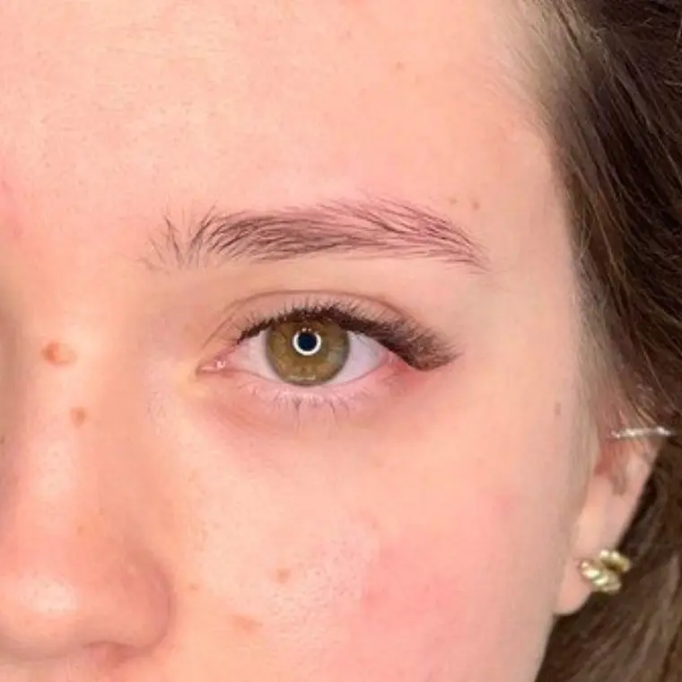
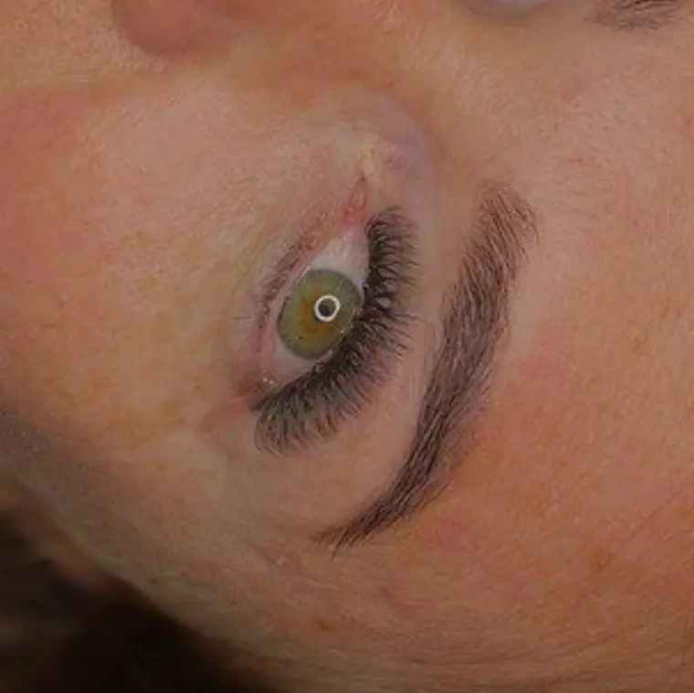
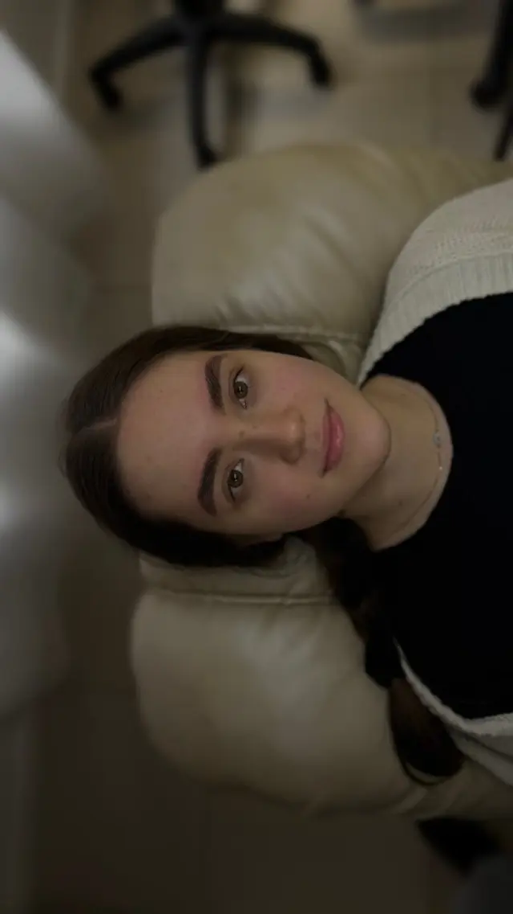
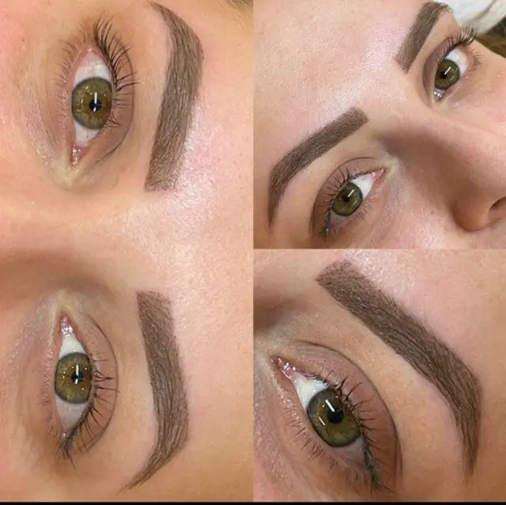
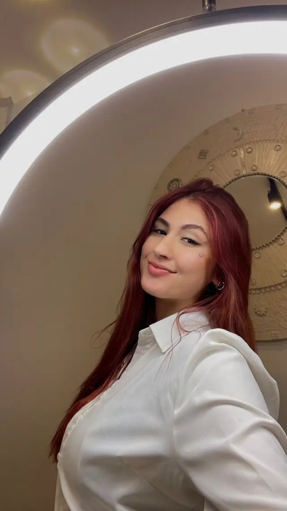

AmandaRodrigues
As tendências do momento, nas suas mãos.
Catálogo
Toca em uma técnica pra ver os detalhes e agendar direto pelo WhatsApp.
Cada olhar, pensado para o seu rosto.
Cílios ✦ Sobrancelhas ✦ Micropigmentação






Brow lamination
Uma técnica que modela os fios: usamos produtos específicos pra moldar a sobrancelha, permitindo que os fios sejam penteados pra cima ou na direção que tu desejares, com um visual mais volumoso e definido.
Os fios são fixados na posição desejada, criando a impressão de sobrancelhas mais cheias e alinhadas.

Micropigmentação
Implantação de pigmento superficial na pele pra realçar, definir ou reconstruir a forma das sobrancelhas, preenchendo falhas e deixando um aspecto natural, preenchido e bem delineado.
Volume e praticidade pro seu olhar.
A extensão de cílios alonga e dá volume aos cílios naturais. Os fios sintéticos são colados individualmente nos fios naturais, com uma cola profissional específica para isso.
O fio natural tem um ciclo: nasce, cresce e cai. Na manutenção, removemos os fios sintéticos que já cresceram, pra que não causem incômodo nem prejudiquem o fio natural. Assim a extensão continua bonita e segura por muito mais tempo.

Eu sou a Amanda.
Sou lash designer e designer de sobrancelhas. No meu Studio, cada procedimento é pensado para realçar o teu olhar, sempre respeitando os teus fios naturais e o que combina com o teu rosto.
Aqui tu encontras das técnicas mais naturais às mais marcantes. Escolhe a tua no catálogo e vem viver essa experiência comigo.